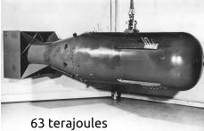
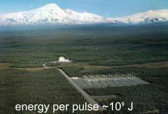
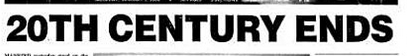
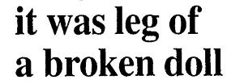
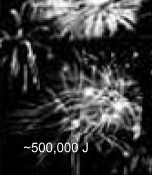
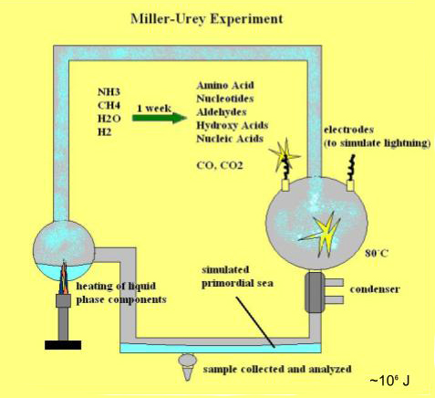

Galvanism
·
fifth season
LED fireflies rising
then sputtering
into smog. The smell of rain of dusk. I have
never seen either. Just what I think
about in that last year.
I was eager to cut
my fingers off
of holding so tightly. Burning leaves
or burnt rubber. The light
the color
of light that slips between
decades.
Always in parked cars.
I hear that voice.
I hear that future.
I so want to
inhale.
If the clouds sustain
the ashes, if the weather is like this
all the time, then.
The weight
of the chance of rain
on the neck back.
My body is eager
to disapparate
and pass
through the field
through tall grass
whistling through
the wild
cane tails
to the grandstand
and back again.
To become the silence
that grates itself
through those comb teeth.
To make a sound.
The fifth season
is hidden after the last.
The belief that
lingers:
trees that grow southwest and northeast
can come together
to form an archway.
The days that roll into a ball
of road flowers and cycloalkanes
can be putted through.
And leave behind a trail;
A what you call,
a desire line.
Can dewdrops form at this time?
I’ve waited for graduation.
And between now and then,
there is only space.
The warm lamp
that fades the outline.
I hated the waiting.
I tore the treebark
and spoke
into it “when you grow back, the ship will return.”
The fifth season is always a visit.
There is sometimes television
noise that is carried over
while we talk.
Gunshots or fireworks.
Or phone calls
behind the trees.
In clouds that trap the bells
speak to me again.
Single charcoal stone that talks about
how night vapors from the ground like a sitcom.
Speak to me now.
When repeating,
pealing crack into the tree in half
and PA system vibraphone
in that distant clutch
of houses I wrote
it all in a piece of paper that burned
itself without fire, just sublimation
Where is the drill
in the pantry?
I know I left it there.
late afternoon
blue marinade
color swirling
into the glass.
We drink it.
I like to say we want to lie
on the grassfields, but something about them
I’m not privy to. Yesterday in the news, I heard
of another bombing.
The shockwave
that washes like a hand
ringing each stone in the mud.
I can feel it in my body.
Passing through like that.
This is how I imagine I would
but slower, and more like tissue.
·
in vitro
pale green
evening descends
after the last two color
of a newness so
fresh that it is
that close
to death as
the brightness
of a leaf at the very
tip and a roach before
it has gained
its colors
wrapping around
the city much like bottle
glass or cellophane
weathered into cloudiness
picked second
hand from the library
of plastics handed
down from a retail
ancestor together
breathing backwards
to the same color
of crushed adelfa
leaves mixed in milk
quiet enough that
it can be chalked
up to a sickness
this is what
enfolds over the
municipalities
like something took
great care
to hold them
as mint and delicate
keeping all
the air in
Participants exposed
to blue light for 6-8
days exhibited
waiting for some bell
shaking on mute ice
cream terrorist
hanging
a brain, voltage
of crop yields
believed to be in
situ. Models trained
on datasets
within a standard
a banner, body
deviation of 2.1%
transparency
of clouds, of long haired
Moratoites brushing
grass as clear as
try harder next time.
Cows fed a high
a low, take-out
metalloid diet supplemented
with 1 mg isoprene
had a 27% reduction
pag madilim ‘di na abot
ang presyo
ng hanging lawa
in rumination. Subjects
primed with
a gun, trial
images relating
to scarcity allocated
46% fewer resources
to economic games
a swarm, law
such as cooperation.
Nanoparticles with
a passing, projection
a diameter < 10 nm
demonstrated
weathering
some days the
smell is good
volunteerist effects
a mind, populace
in vitro
·
pagsapi
aninong tinatabunan
ang pamilya ng lote
128; saranggolang
nadakip ng posteng
kuryente. sumisipol
·
walking home
Constant buzzing, lines entangling into each other forming a canopy forming a clearing for a magenta sky. A transmission tower blinking, overlooking. I need to get there at a certain time. What time is it? I seem to have misplaced my watch. I dislike the way they hug my wrists. Like a fever at night. I can almost feel my skin prickling, like as a hand or a foot has fallen asleep or has started to wake up, or a subtler version of static from rubbing balloons. A page of newspaper from last year: 20 sugatan sa bomba. My grandmother has lost feeling on one side of her body. Can’t afford to get her looked at in another timeline where we can the doctors ran several tests and cannot say what it is. The rustling of garbage bags at this hour the sound of six thousand people kneeling. My silhouette looking like a walking turtle because of my backpack. I have somewhere I need to get to. Turning the corner, the transmission tower almost leaning, the same size it was. The sound of wasps.
·
·
capacitance
To be stretched
flat into a sheet
so thin that I can think
with confidence
“this is where
it all converges.”
To audit the sky
with all my breath
gone; I want it
to know that I am
its surveillance:
watching
without colliding
all of it
in the gap
·
energy grid

Scheduled Power Interruptions
9:00 AM – 11:00 AM, Pampanga
a rolling pin like a radar sweeping
us flat; history a lurching car not staying dead or true

thunder from sightless sources
enemies packed in lunchboxes
12:00 NN – 2:00 PM, Zambales



nakatulala sa hangin. Nagsusumidhing damdamin,
The book I held on to the most was revelations.
2:00 PM – 4:00 PM, Bataan
Lights going out. But we're in
the current. Lo-bat? Gutom lang yan!

8:30 AM - 10:30 AM, Estados Unidos
·
gas in the ground
I’ve trapped the spores in my lungs
when I knocked on the ground
and felt lightning I’ve asked
if the wound on my back
traced a disconformity
as if the field long ago
were reversed, but, still bitten
by the soil, I pose
the question: if an animal
not captive had been
observed for ten days.
Lying in bed, I wait
for the symptoms. Watching
malachite bleed
sap on the third day.
One storm passes
then three return.
Face down, my nose closest
to the ground: the single stalk carrying
my weight, or rather,
the subterranean caverns
suspended like bats from my parenchyma:
glands that store thunder
in circuitous echoes crashing
in milky waves
painting the tips of my toenails.
There is no fever, but there is
an imagined one. The one I thought
the earth asked of me —
the wound on my back
for a body to feed on.
·
on the Architecture of Living Chambers
in addition, the nature of flesh is such that none of its chambers can be whispered to from another room a little way off which cannot also be heard by each one of which are between the two, although this more distant division does not sing at all. As, for example, for a cord ABCD, the knowledge of glass is communicated by means of what awakens first: A moves, from afar, D. And the same holds true of all the other hauntings of our rivers. The boatpeople waving underneath the condominium complex, as I just happened to have seen, which could conceal automatons. Yet, I know them as tomorrow’s people: not by seeing them through my eyes but solely by the judgement of days. On occasion my belief of the nature of wax is most occurrent and at-hand, returning the greeting over the bank. Did I believe I knew it by my common senses, or is my knowledge restored as wax unmelted? I now know that this is the circuitry of the oikos. The kettle whistles then the galloping of the TDMA modulation, which tumbles from the nose into the bedroom, the mountain of ceiling fans, through nested forwarding addresses, nimbostratus system. This is why anatomists can never produce complete maps. Choir of hospitals excavating
·
milkfish
with a ghost in my body
I might go tilt my head down to light
have it pass through my flesh
project the waves on the limestone
test what it was like to have water there
maybe a cave can grow down from it
where we can shout in it too
compile a record in the reverberation
floating down like ash
to feed the milkfish that will gather there